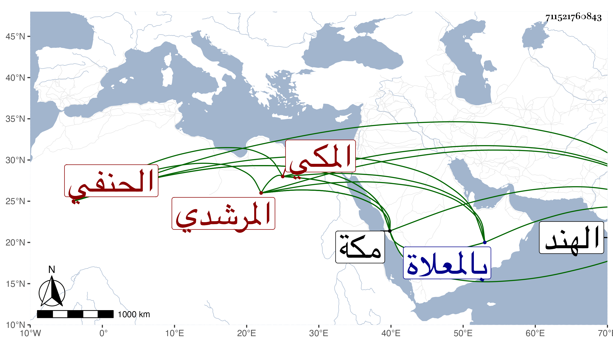

0902Sakhawi.DawLamic.ITO20230111-ara1.EIS1600.711521760843
Biography ID: 711521760843
318
عبد الرحمن بن محمد بن إبراهيم بن أحمد بن أبي بكر بن عبد الوهاب وجيه الدين أبو الجود بن الجمال أبي المحاسن المرشدي المكي الحنفي والد على الآتي وشقيق أبي الفضائل محمد أمهما أم حبيبة ابنة الكمال الدميري وهما أخوا عبد الأول الماضي . ولد في سحر يوم الثلاثاء ثالث أو رابع عشري شعبان سنة سبع وثمانمائة بمكة ونشأ بها وأحضر في أول الخامسة على الشمس المعيد الحنفي بعض المصابيح والعوارف والمقامات وتناول الكتب الثلاثة منه وأسمع على والده والزين المراغي وابن الجزري وابن سلامة في آخرين وأجاز له جماعة ومما سمعه على والده فهرسته بقراءة مخرجه ابن موسى وعلى المراغي المسلسل والأول من مشيخته تخريج ابن موسى أيضا وجزء البطاقة ، واشتغل قليلا وحضر دروس أبيه وحدث قرأت عليه في الحجة الأولى حديثا ، وكان خيرا كثير الطواف والانعزال عن الناس مع اختصاص بابن قاوان ومداومة على الجماعة ممن دخل الهند مرارا للرزق . مات في يوم الأربعاء سادس عشر المحرم سنة اثنتين وثمانين بمكة وصلى عليه عصر يومه ثم دفن بالمعلاة رحمه الله وعفا عنه وايانا .
